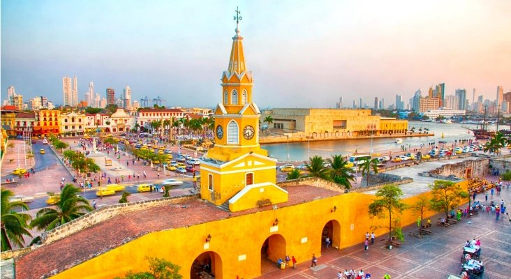

Cartagena
What to do in Cartagena?
Ciudad Amurallada
The Walled City is the historic center of the city of Cartagena de Indias and has been declared both a national heritage site and Colombia as a World Heritage Site. Nobles and important people lived here during the colonial era. When touring the Walled City we can find the Palace of the Inquisition, the Zenú Gold Museum and the Museum of Modern Art. Also the Plaza de los Coches that presents a tour of the colonial mansions and the statue of Pedro de Heredia, the Church and the Convent of San Pedro de Claver and the Mayor's Office, among other perfectly preserved historical buildings in Cartagena de Indias.
Castillo de San Felipe

Fortress from the Spanish colonial era built on the Cerro de San Lázaro to protect the only land entrance to Cartagena de Indias.
Museo del Oro Zenú

The Zenú Gold Museum in Cartagena is part of the Gold Museum network of the Bank of the Republic of Colombia. Preserve and exhibit works of goldsmithing and ceramics of the ancient Zenúes, who, through colossal works of hydraulic engineering, lived two millennia ago on the plains of the Colombian Caribbean, and highlights the culture and traditions of the current Zenúes.
Santuario de San Pedro Claver

Four hundred years ago, the Jesuits settled in Cartagena and founded a school and a church in the center of the city. During the 17th century, A father named Pedro Claver dedicated his entire life to the protection of African slaves and became a saint 300 years later. To keep his legacy alive, The Jesuits returned to the city in the late 19th century and began collecting pieces for a museum that included pre-Columbian Caribbean, religious, and African art. and, of course, the chamber and other spaces where the saint lived and died. Today it is the museum with the most complete collection of religious art on the Colombian coast, and the building preserves the spirit of Claver, the spirit of Human Rights.